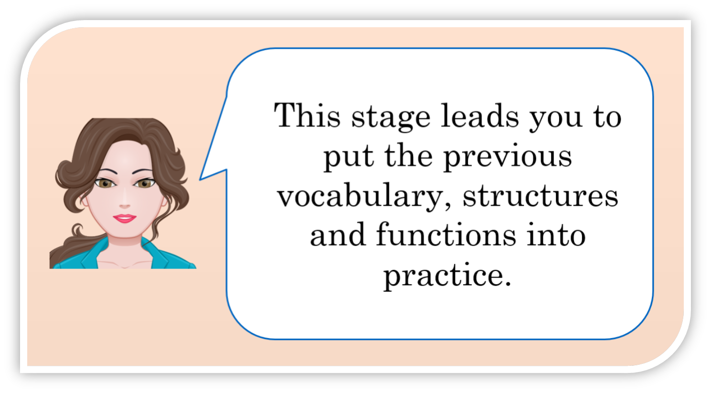

Childhood TV Shows

Pre-listening Task
Do you remember your childhood TV shows? Click on the image and play the game in order to check if you recognize some popular cartoons:

If you click on three wrong options, the game shows you the correct cartoon.
Talking about TV shows
Listen to two friends talk about their childhood TV shows and answer the questions below.
Listening comprehension
{}
Puntuación.
What if I don't understand all the conversation?
Discussion

Think of your childhood TV programs and participate by answering the questions. Use the Forum provided by the teacher and comment on your classmates' posts.
a) What was your favorite cartoon when you were a child?
b) Why did you like it?
c) How different is your favorite cartoon from current programs?